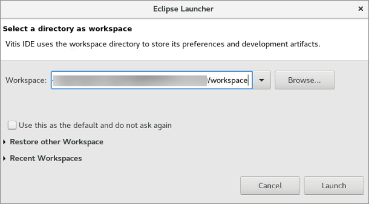
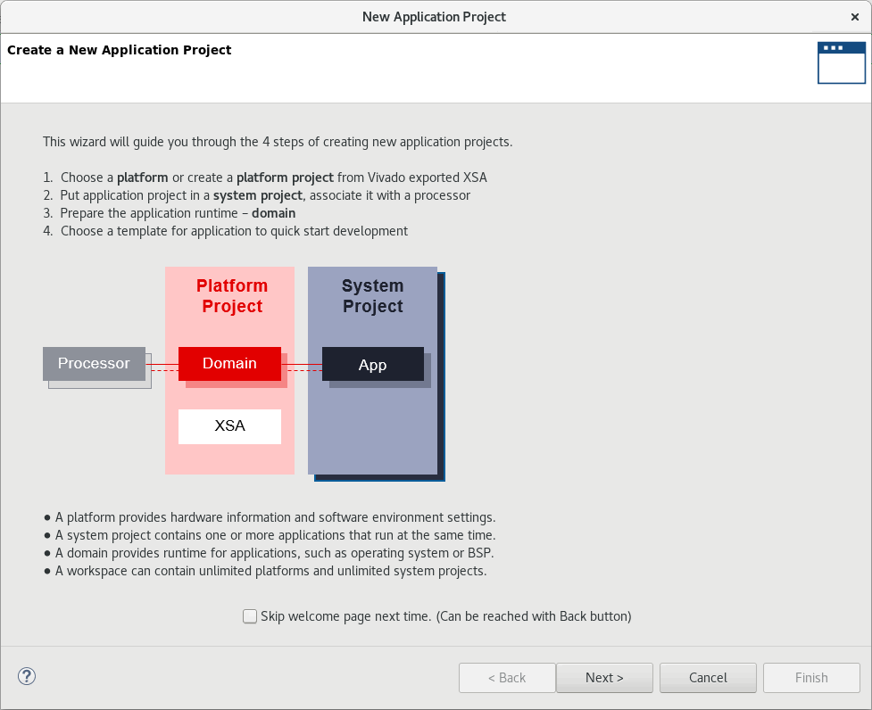
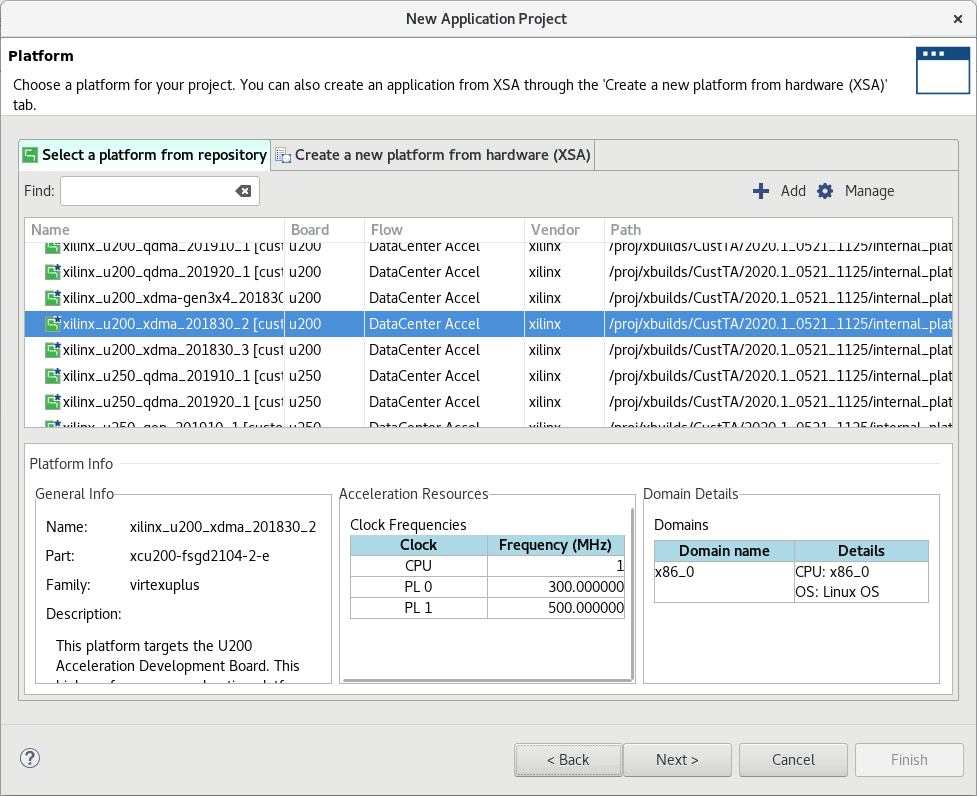
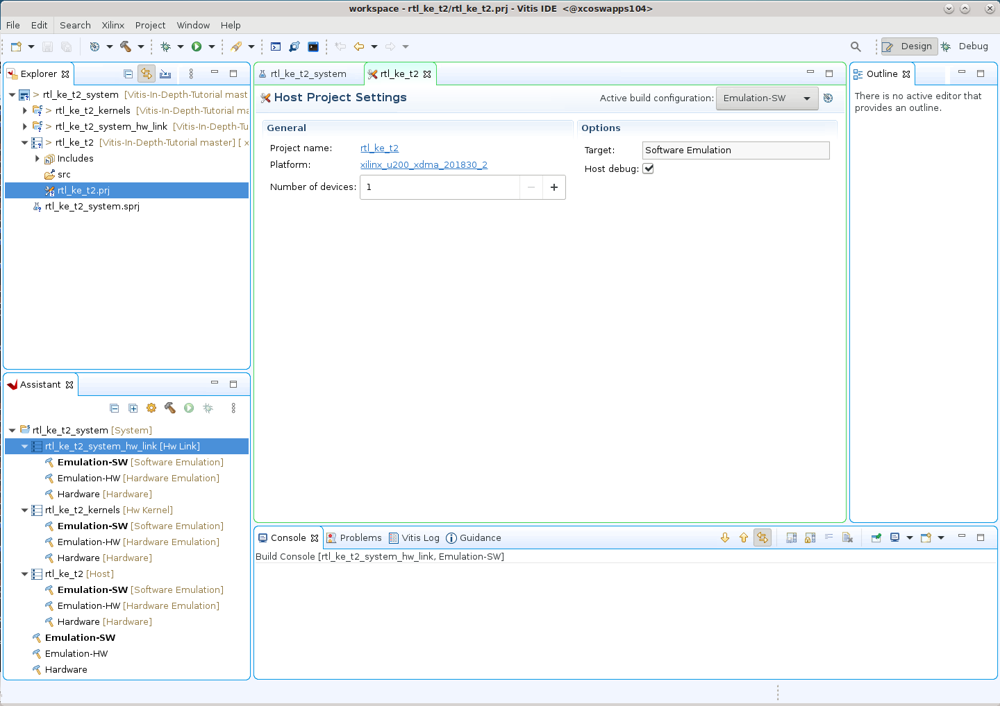
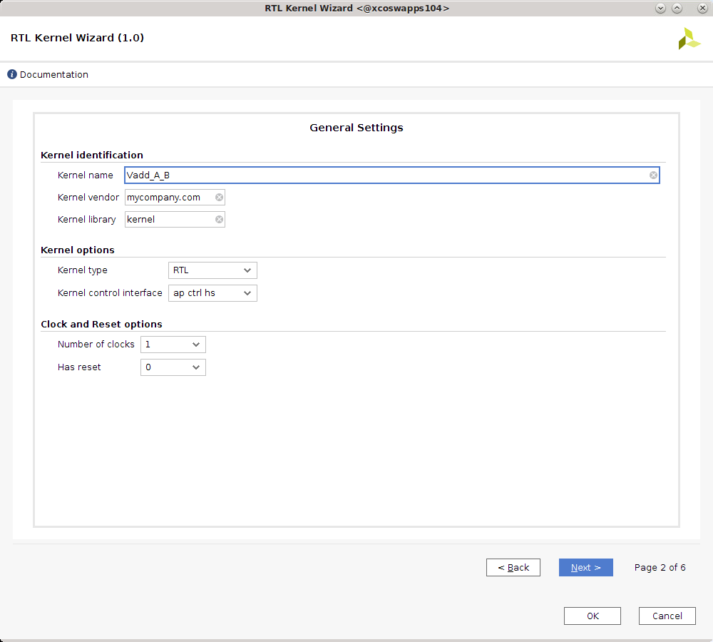
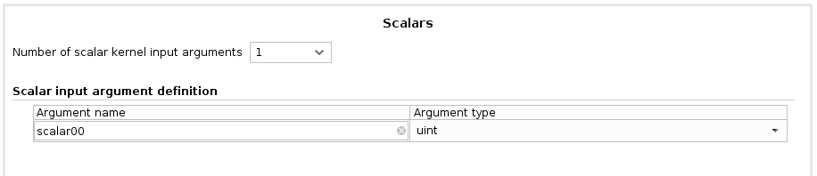
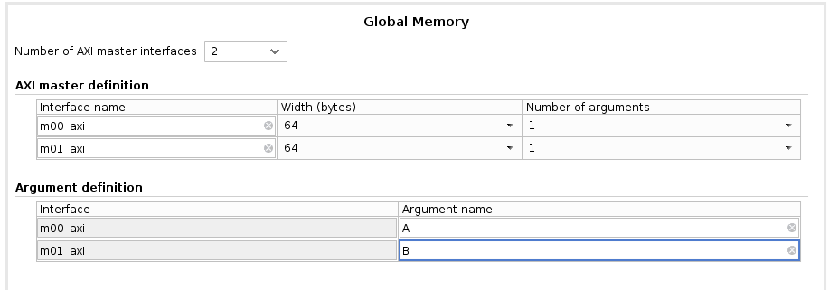
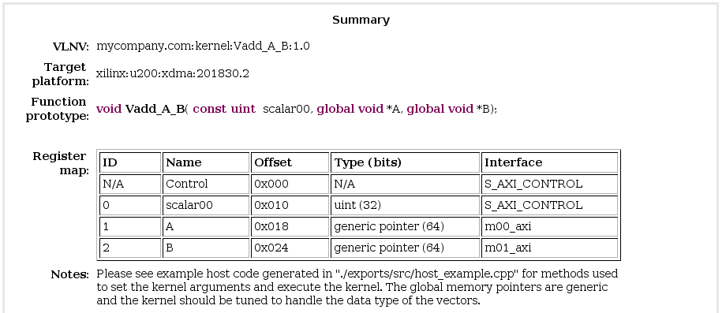

2020.2 Vitis™ Application Acceleration Development Flow TutorialsSee 2020.1 Vitis Application Acceleration Development Flow Tutorials |
RTL Kernel Wizard Flow¶
The process described in this lab follows the flow described in RTL Kernel Wizard of the Vitis Unified Software Platform Documentation (UG1416).
IMPORTANT: Before running the tutorial commands, you must set up the tool environment by running the following commands, as described in Setting up the Vitis Environment in the Application Acceleration Development flow of the Vitis Unified Software Platform Documentation (UG1416).
#setup Xilinx Vitis tools. XILINX_VITIS and XILINX_VIVADO will be set in this step. source <VITIS_install_path>/settings64.sh #Setup Xilinx runtime. XILINX_XRT will be set in this step. source <XRT_install_path>/setup.sh
Change directory to the tutorial folder:
cd ./01-rtl_kernel_workflow.To launch the Vitis IDE, enter the
vitiscommand in a Linux terminal window.
The Workspace Launcher dialog box is displayed.
Select a project location for your workspace, and click Launch.
The Vitis IDE opens. Click File > New > Application Project.
The New Vitis Application Project window opens.
The New Application Project wizard is displayed, with the overview page showing a brief overview of the process. Click Next.
The Plaform page is displayed. Select
xilinx_u200_xdma_201830_2, and then click Next to proceed.
The Application Project Details page is displayed. Make the following selections:
Enter a project name, such as
rtl_ke_t2.Create New System Project is enabled, and the System project name is generated from the project name. You can edit it if needed.
The Processor is selected automatically from the platform you selected.
Click Next to proceed.
The Templates page opens, showing application templates you can use to start your project.
Select the Empty Application and click Finish to create your Vitis application project.
The new project wizard closes and opens the Vitis IDE with your new project loaded. 
Configuration with the RTL Kernel Wizard¶
From the top menu bar of the Vitis IDE, click Xilinx > Launch RTL Kernel Wizard > rtl_ke_t2_kernels.
The RTL Kernel wizard opens to the Welcome page, which offers a brief introduction to the process used for defining RTL kernels. You will be following that process in this tutorial. Take a minute to read the instructions, and then click Next to proceed.
The RTL Kernel wizard guides you through the process of specifying the interface characteristics for an RTL kernel. Using the RTL Kernel wizard ensures that the RTL IP is packaged into a valid kernel that can be integrated into a system by the Vitis IDE. The wizard also has an added benefit of automating some necessary tasks for packaging the RTL IP into a kernel.
The RTL Kernel wizard generates the following:
An XML file necessary to package the RTL design as an Vitis core development kit kernel XO file
A sample kernel (RTL code, test bench, and host code) performing
A[i] = A[i] + 1A Vivado Design Suite project for the kernel
As you continue through this tutorial, you will replace the sample kernel with the existing Vector-Accumulate IP, and package it as an XO file.
General Settings¶
The General Settings page is displayed as shown below.

Kernel Identification: Specifies the vendor, kernel name, and library, known as the “Vendor:Library:Name:Version” (VLNV) of the IP. The kernel name should match the top module name of the IP you are using for the RTL kernel.
Kernel Options: Specifies the design type.
RTL (default): Generates the associated files in a Verilog format.
Block design: Generates a block design for the Vivado tools IP integrator. The block design consists of a MicroBlaze™ subsystem that uses a block RAM exchange memory to emulate the control registers.
Clock and Reset Options: Specifies the number of clocks used by the kernel and whether the kernel needs a top-level reset port.
Make the following selections:
For Kernel name specify
Vadd_A_B.For Kernel control interface select
ap_ctrl_hs.For the remaining options, keep the default values, and click Next to proceed.
Scalars¶
Scalar arguments are used to pass input parameters from the host application to the kernel. For the number of input arguments specified, a corresponding register is created to facilitate passing the argument from software to hardware. Each argument is assigned an ID value that is used to access that argument from the host application. This ID value can be found on the Summary page of the wizard.
Argument name: Name of the argument.
Argument type: Type of the scalar argument expressed as a native C/C++ datatype. For example, (u)char, (u)short, or (u)int.
Keep the default values, and then click Next.

Global Memory¶
Global memory is used to pass large data sets between the host and kernels and between kernels to other kernels. This memory can be accessed by the kernel through an AXI4 master interface. For each AXI4 master interface, you can customize the interface name, data width, and the number of associated arguments.
Number of AXI master interfaces: Specifies the number of AXI interfaces in the kernel.
AXI master definition: Specifies the interface name, the data width (in bytes) and the number of arguments associated with each AXI4 interface.
Argument definition: Specifies the pointer arguments assigned to each AXI4 interface. Each argument is assigned an ID value, that can be used to access the argument from the host application. This ID value assignment can be found on the Summary page of the wizard.

Make the following selections:
For Number of AXI master interfaces, select 2 because the Vector-Accumulate kernel has two AXI4 interfaces.
In the AXI master definition section:
Do not modify the interface names.
Do not modify the width.
For Number of arguments, select 1 since each AXI4 interface is dedicated to a single pointer argument.
In the Argument definition section, under Argument name:
For m00_axi, enter
A.
Dataset A is accessed through this AXI4 interface.For m01_axi, enter
B.
Dataset B is accessed through this AXI4 interface.
Click Next to proceed.
Streaming Interfaces¶
You do not need streaming interface for this design. Keep the default value and click Next.
Example Summary Page¶
The Summary page displays the summary of the various other pages you just stepped through t define the RTL Kernel. Review the summary page for correctness.
Target platform: Specifies what platform the RTL kernel will be compiled for. The RTL kernel must be recompiled to support different platforms.
Function prototype: Conveys what a kernel call would be like if it was a C function.
Register map: Displays the relationship between the host software ID, argument name, hardware register offset, datatype, and associated AXI interface. 
The RTL Kernel Wizard uses the specification captured through the various steps and summarized in the Summary page to generate:
A kernel description XML file,
kernel.xml, located in/reference-files/src/xml, that defines the attributes of the kernel needed by the Vitis core development kit and the Xilinx Runtime (XRT), such as the register map.A sample kernel called VADD implementing
A[i]=A[i]+1, including:RTL code
Verification test bench
Host code
A Vivado Design Suite project for the VADD sample kernel
Click OK to launch Vivado Design Suite to package the RTL IP and create the kernel.
Next Steps¶
Next you will take an RTL design and package it as an IP in the Vivado Design Suite.
Return to Main Page — Return to Start of this Tutorial
Copyright© 2020 Xilinx